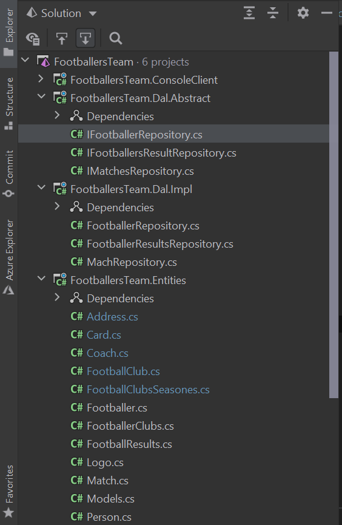
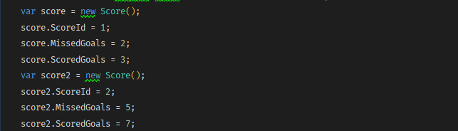

Тема: ВИКОРИСТАННЯ ВЛАСТИВОСТЕЙ. АВТОМАТИЧНІ ВЛАСТИВОСТІ.
СКОРОЧЕНИЙ ЗАПИС ВЛАСТИВОСТЕЙ
Мета: Здійснити введення та виведення даних закритих полів класів, застосовуючі методи-властивості.
Постановка задачі:
- Доповнити програмну реалізацію класів методами-властивостями класів, введення та виведення даних закритих полів класів
- Протестувати програму, шляхом запуску програми, введенням та виведенням значень закритих полів.
Місце розташування проекту.
Середовище розробки : Rider
Файлова структура проекту
Використання
Автоматичні properties
Загальна форма
Запис з первірками
Результат

Висновок: в ході виконання даної лаборатоної роботи я навчилась створювати та використовувати аксесори а також задавати їм модифікатори доступу. Таким чином властивості надають зручний і раціональний спосіб до полів моделі, а також забезпечуть інкапсуляцію.
Використання властивостей в класах дає наступні переваги:
забезпечується більш раціональний доступ до внутрішніх змінних класу;
в коді аксессор можна реалізувати різного роду перевірки на допустимість внутрішніх значень для полів класу;
гнучкість в правах доступу до внутрішньої моделі: відсутність аксесора дозволяє реалізувати доступ «тільки для читання» до внутрішніх даних класу. Це, в свою чергу, унеможливлює виконання довільного змінення цих даних